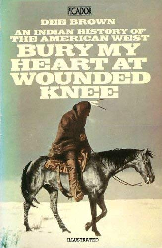

Introduction
The Great Sioux War lasted from 1876 to 1877. By quite many people it is seen as a native Last Stand against the US government; afterwards there were very few conflicts between the two parties.
Origin
The Sioux is a collection of tribes (Lakota Sioux, Dakota Sioux and more) living in North and South Dakota. In this area reside the resource-rich Black Hills. The Gold and Oil potential in these hills made president Ulysses S. Grant order campaigns against the local Native Americans, to get access.
Broken Promises
As is common in Native American history, the US government broke an earlier promise: 10 Years before, the US promised not to encroach Sioux lands in The Fort Laramie Treaty, which marked the peace after Red Cloud's War (in 1868). But, as early as 1874, the government sent an illegal party to explore the lucrative potential of the black hills.
Battle of the Little Bighorn
In 1876, the first major battle took place: the Battle of the Rosebud [river], but the largest open combat to date was the Battle of the Little Bighorn, which ended victorious for the Native Americans.

Custer's Last Stand: where he fought the Natives in a circle with his men.
Custer's Last Stand
In the Battle of the Little Bighorn, it was very apparent that terrain knowledge diverged hugely between the US army and the native warriors. For instance, Commander Custer got stuck in the forest and couldn't find a way over the river.
Failing to advance, Custer had to fortify his men in a circle up on a hill. In the picture above you may notice the native Americans are literally encircling Custer's men (forming a circle) to take the victory.
Native Americans call the Battle of the Little Bighorn the " of the Greasy Grass, and they shy away from 'Custer's Last Stand' as it romanticizes the officer.
A peace treaty
After this major victory that is remembered in 'the hearts' of many Native Americans, came a series of defeats and a year-long period of exhaustion. It was at this point (in 1867) that the combatting parties signed a treaty that took away Sioux Land and had them live on reservations.
Aftermath of War
Life on the reservation was rather bad for the Native Americans. They had to learn Western schooling and could only get food with ration coupons. In 1890, several hundred Lakota Sioux were massacred at wounded knee under the false premise of getting their freedom.

This book was immensely popular at time of publication. While there is truth to the American side of the story, Dee Brown had showed the general public the Native American side for the first time. A film was made of this book
Legacy
As mentioned before, the Great Sioux War resides in the hearts of many Native Americans. It showed the great courage of native warriors and included traditional fighting (with horses, and some traditional battle gear). Perhaps the conflict had inspired the Ghost Dance movement, where that strong spirit of heart - showcased in the Great Sioux War - would overcome the US government once again.
The Ghost Dance movement was a nationwide vision / dream that Native American greatness would return shortly.
Another form of legacy has a negative tone: the Native Americans are currently fighting the USA over a renewed encroachment on the black hills, mount Rushmore and the Pipeline Protest.
Useful resources
Related museums
The Heard Museum in Phoenix
The National Museum of the American Indian (from the Smithsonian)
Volkenkunde museum in the Netherlands exhibits Native American pieces on occasion
Karl May Museum in Germany